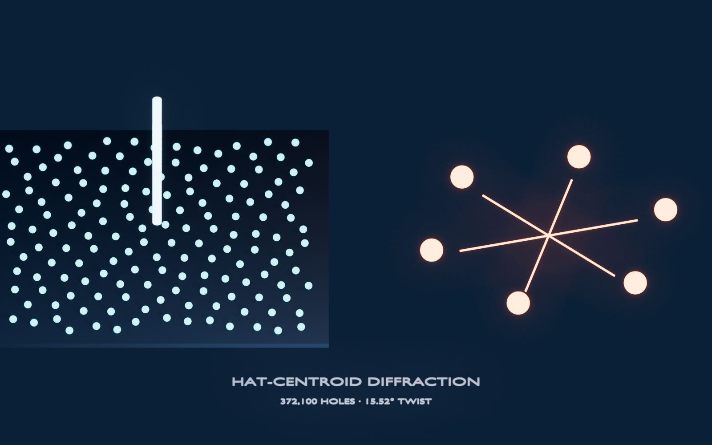

Waves, acoustics, and photonics
Non-repeating tiled surfaces for scattering, diffraction, and waveguide studies, now with experimental results.
How tiled geometry affects waves
Diffraction is the far-field pattern produced when waves scatter from many features. Scattering means that an obstacle redirects part of a wave. A structure is chiral when it has a handedness that cannot be aligned with its mirror image. A monotile point or resonator array can therefore change which directions and frequencies reinforce, cancel, or respond differently to opposite handedness.
Moritake, Takiguchi, Aihara, and Notomi fabricated a Hat-centroid quasilattice: circular holes of radius 100 nm were placed at tile centroids in an H6 Hat metatile, then etched into a 350-nm silicon-nitride film. The roughly 500 × 500 μm sample contained 372,100 holes; the pseudo-period a was swept from 600 to 750 nm. Illumination used a 532-nm laser expanded to about 1 mm, exceeding the patterned area, with diffraction recorded 75 mm downstream. It was not a Spectre-shaped material lattice. The measured far field showed sharp, illumination-position-independent Bragg peaks, a sixfold pinwheel whose twist relative to radial directions was 15.52°, a sign reversal under mirroring, and a response that changed relative peak intensity (but not peak position) under left- versus right-circular polarization. Honeycomb and Penrose controls did not reproduce the Hat-specific chiral pinwheel.[19]
Those observations establish long-range quasiperiodic order and planar chirality for that point decoration under ordinary Maxwell electrodynamics. Finite-aperture Fourier transforms cannot exclude continuous spectral weight, so position-independent Bragg peaks support long-range order without by themselves proving pure-point diffraction. The diffraction had C6 intensity symmetry through Friedel’s law even though the centroid set had exact C3 rotational symmetry without mirror symmetry. A Fourier transform of the measured point coordinates reproduced the peak positions; finite hole size reduced high-wavevector intensity relative to ideal delta-function calculations.[19] The broader theoretical foundation is the quasicrystalline diffraction structure of Hat-family tilings.[6]


Condensed-matter theory adds depth: an ideal nearest-neighbor tight-binding model on the Hat vertex graph (mean coordination ≈2.31, mean bond length ≈1.37a) has graphene-like features and a macroscopic zero-energy manifold of compact localized states, many concentrated around reflected “anti-hat” environments, under specified hopping and flux choices,[20] Ising spins on the underlying kite graph order with critical temperatures Tc/J=2.405±0.0005 and Tc*/J=2.143±0.0005 while satisfying Kramers-Wannier duality to 1.000±0.001 and collapsing with ordinary 2D Ising exponents,[21] and dimer statistics on a regularized Spectre graph admit the exact count Z=2NMystic+1.[22] Together these establish that monotile geometry changes wave and lattice physics, the open question is where that change is useful. Experimental polariton realizations on monotile lattices now show Bragg peaks and long-range coherence,[40] with theory predicting critical states and anomalous transport in related optical setups.[41] Tile-shape geometry can tune topological phases and the quantum geometric tensor in model systems: one geometric parameter continuously connects Chevron, Spectre, Turtle, and Comet, with a reported bulk Chern marker C≈0.98 at ℓ=0.33 and survival under onsite disorder through roughly W/t≤1.[39]
Established experiments and theory
Peer-reviewed experimental evidence includes fabricated chiral diffraction from a Hat-centroid quasilattice.[19] A separate experimental preprint reports a finite, optically written aperiodic polariton realization with Bragg peaks and coherence.[40] Rigorous and numerical work describes Hat/Spectre diffraction,[6][33][35] a Hat-graph tight-binding model,[20] and predicted critical transport in a related polariton proposal.[41] These studies use different physical decorations; they should not be merged into one generic “Spectre material” claim.
In the polariton preprint, a spatial light modulator writes finite Hat-vertex pump arrays with M=1, 4, and 13 tiles into a GaAs microcavity. At about 1.15 times threshold, the M=13 array shows narrow C6 peaks; changing characteristic spacing from D=27.2 μm to 22.6 μm changes favored nearest-neighbor locking from in-phase to out-of-phase. Periodic triangular and Penrose arrays are controls. This is a driven-dissipative experiment under preprint review, not a passive bulk material.[40]
Ref. 41 is a prediction, not an experiment. A finite-difference polariton model with Gaussian scatterers at Hat vertices finds critical states near low-energy pseudogaps and representative transport exponents ν≈0.72 and ν≈0.40. Finite-grid mismatch affects the superdiffusive front, and comparable behavior in Penrose calculations leaves monotile specificity unresolved.[41]
Simulation and measurement workflow
The HLV optical benchmark protocol supplied to this project is useful here only as a claim-disciplined methods template. It correctly treats the Hat diffraction experiment as a positive control for Fourier and full-wave solvers, not as evidence for HLV. Its broader HLV carrier, phase-channel, and memory-channel proposals are unpublished and unvalidated.[74]
- Select the physical decoration, points, holes, resonators, struts, or material domains, and state how it is derived from the canonical tiling.
- Match periodic, random, and alternative aperiodic controls by area fraction, feature count, minimum spacing, material, thickness, and outer boundary.
- Converge finite-element, finite-difference time-domain, or boundary-element meshes and absorbing boundaries; sweep patch size to separate bulk behavior from edge effects.
- Report transmission/reflection spectra, angular scattering, polarization or handedness contrast, quality factor, loss, uncertainty, and raw geometry.
- Fabricate and image the sample, measure dimensional disorder, and feed the as-built geometry back into the model.
A rigorous benchmark should lock geometry and metrics before target runs, separate calibration, validation, and sealed holdouts, and include matched nulls: honeycomb, Penrose, radial-phase-randomized, pair-correlation-matched, and mirrored structures. Mirror reversal, polarization response, aperture scaling, and illumination-position invariance should be explicit gates. A visually striking pinwheel is not enough; the target must predict held-out observables better than equally flexible conventional alternatives.[19][74]
Candidate applications
- Acoustic diffusers and panels tested for angular uniformity and flutter-echo reduction
- Photonic and phononic structures with engineered chiral response
- Antenna and metasurface layouts that suppress grating lobes[38]
- Simulation-ready polygon exports for comparing periodic, random, and aperiodic boundaries in FDTD/FEM
Limitations and open questions
Aperiodicity does not guarantee a band gap, isotropic scattering, low sidelobes, or useful chirality. Response depends on wavelength-to-feature ratio, losses, coupling, boundary, disorder, and the selected points or domains. Acoustic and electromagnetic analogies are helpful only after their boundary conditions and constitutive physics are specified. The main open engineering task is to identify where a canonical monotile layout beats well-tuned periodic, random, and established quasicrystal controls.
See also
Materials science and fluids, Signal processing and imaging, Diffraction and dynamical spectrum, Dimers and constrained models
Categories: Research frontiers